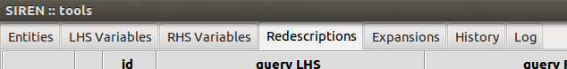
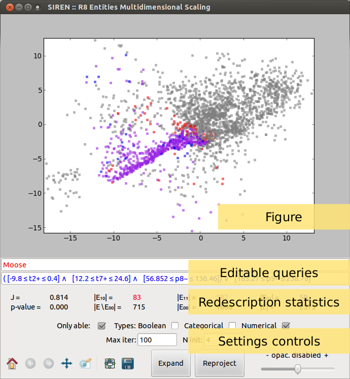
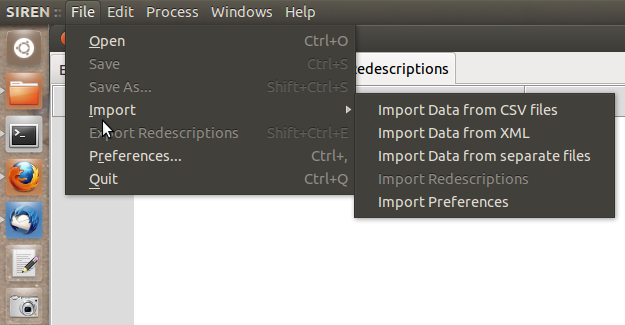
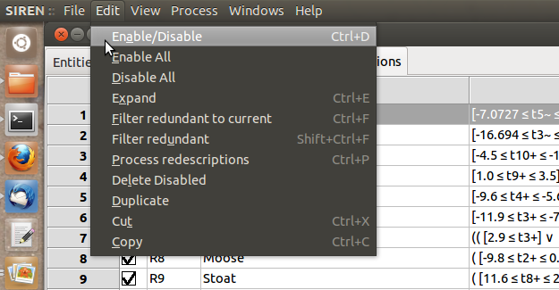
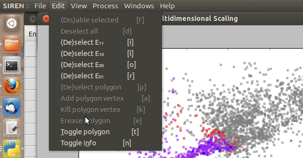
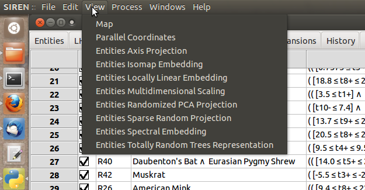
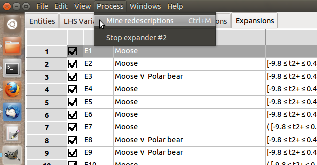
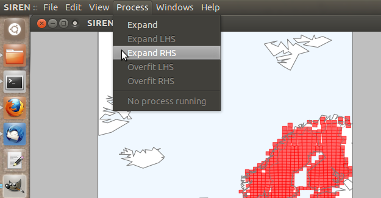
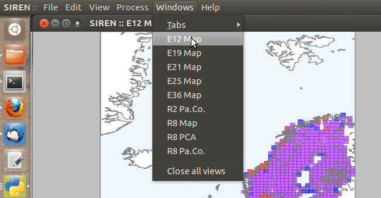
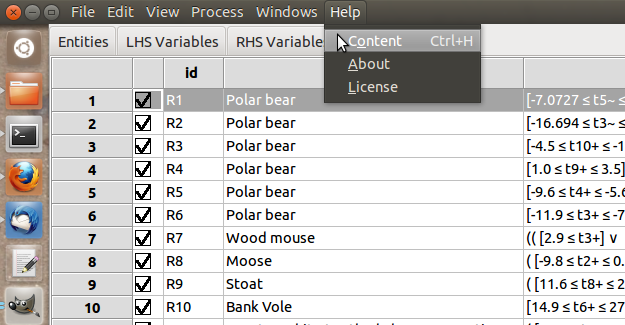

The Tools window is unique, it is the main siren window. It contains several tabs.

 Tabs can be shown or hidden via the interface menu Windows → Tabs.
Tabs can be shown or hidden via the interface menu Windows → Tabs.
The main means to manipulate variables or redescriptions, depending on which tab you are currently viewing, are available via the Edit menu and the contextual menu opened by right click.
List items can be enabled/disabled by checking/unchecking the corresponding box in the left column. All items in a list can be enabled/disabled simultaneously. Lists can be sorted based on the value of the different fields displayed by clicking on the column header.
Redescriptions can cut, copied, and paste from and to different positions in the lists and from one list to the other and vice-versa. All disabled redescritions can be deleted at once.
A view window allows to visualize a redescription, to edit it and launch mining and expansion.
Several views of different types of the same redescription can be opened simultaneously. They are linked together an to the original redescription in the list so that edits and selections made in one view are reflected in the list and other views.
A view window can be opened with a double click on a variable or redescription in a list from the tools window.
Both queries can be edited using the text boxes. If the syntax of a query is incorrect, Siren will not be able to parse it and it will fall back on the previous correct query. Queries are parsed when ENTER is pressed, in order to avoid parsing error due to partial edits.
Redescriptions statistics are shown below the queries.
In case of projections, setting controls allow to set parameters and the data can be projected anew by clicking the Reproject button.
Sliders allow to set the opacity of disabled entities, as well as the level of details for parallel coordinates plots.
Expansion can be started by pressing the Expand button. The expansion will be delegated to a background process. It can be interrupted via the menu Process → Stop expander XXX, where running task are listed. Redescriptions generated during the expansion will be appended to the list of redescriptions in the Expansions tab.
The main menu of Siren is at the top of the Tools window.
Here is a summary of functionalities available throught the menu.
The File submenu provides import, export, opening and saving functionalities and setting the preferences.
The content of the Edit submenu depends on the tab or view currently active.
If the tab contains redescriptions, it will also allow to filter the redescription and to copy, cut and paste them.
These functionalities can also be accessed via the contextual menu on right-click.
 If the tab contains redescriptions or variables the View menu will allow to open a view window to visualize the selected item.
The Process menu allows to start mining redescriptions and contains a list of running task and allows to interrupt any of them.
 The Windows menu contains a list of tabs and allows to show or hide any of them. It also contains a list of Views currently opened sorted by redescription, allowing to access any of them and close all at once.
The Help menu provides access to this help and to more information about Siren and licensing.
Siren --- Last modified: Wed 31 Jul 2013, galbrun@cs.helsinki.fi